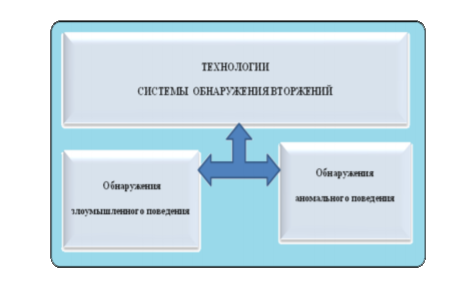
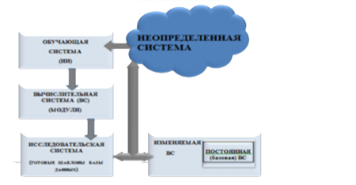

Классификация технологий системы обнаружения вторжений

Для распознавания и обнаружения
вторжений обычно применяются различные
типы эвристических алгоритмов:
комбинированные системы с эвристическим
сканированием. Данный метод основанный на
сигнатурах и эвристике, призван улучшить
способность СОВ применять сигнатуры и
распознавать модифицированные версии
вторжений. Однако, данная технология,
применяется очень осторожно, так как может
повысить количество ложных срабатываний.
Системы обнаружения вторжений второго
класса проектируются на основе моделей
нормального поведения шаблона и ищут
аномальные вхождения в поток событий
информационного процесса для распознавания
неизвестных вторжений. Задача исследования
нормального и аномального поведения инфо-
телекоммуникационных систем является очень
сложной и комплексной. Поэтому ученые
практики отмечают, что критериями анализа и
оценки методов СОВ могут быть выбраны
следующие параметры:
- уровень наблюдения за системой;;
- верифицируемость метода (экспертная
оценка корректности метода в процессе
эксплуатации системы обнаружения
вторжений);
- адаптивность метода (устойчивость
метода к малым изменениям при
реализации атаки);
- точность обнаружения вторжений и
уровень ложных срабатываний и др.
Искусственная иммунная система
(ИИС) для киберпространства в рамках проекта
фирмы IBM
В данной модели функционирование ИИС
основывается на базовых положениях и
механизмах биологической иммунной системы
(генерация и детекторов, отбор нежелательных
детекторов, клонирование и мутация
детекторов, формирование иммунной памяти).
На рисунке приведена обобщенная схема
механизма работы ИИС.

Основные возможности
ИИС предложенной модели:
- уровень наблюдения за системой;
- верифицируемость метода (экспертная
оценка корректности метода в процессе
эксплуатации системы обнаружения
вторжений);
- адаптивность метода (устойчивость
метода к малым изменениям при
реализации атаки);
- точность обнаружения вторжений и
уровень ложных срабатываний и др.